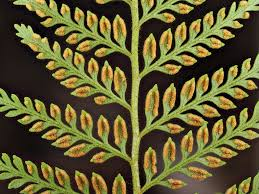

Dennstaedtiaceae
Bracken Fern Family
Dennstaedtiaceae is a family of leptosporangiate ferns in the order Polypodiales, containing about 10-12 genera and ~240 species. These ferns are found worldwide, particularly in tropical and temperate regions, and often characterized by large, highly divided fronds arising from creeping rhizomes typically covered in hairs (rather than scales). Their sori are typically marginal or submarginal and protected by a distinctive cup-shaped or purse-shaped indusium, often formed by the fusion of a true inner indusium and the reflexed leaf margin.
Overview
The Bracken Fern family, Dennstaedtiaceae, includes some of the world's most widespread and recognizable ferns, most notably Bracken itself (Pteridium aquilinum), which is found globally and can be an aggressive colonizer of open and disturbed lands. Members of the family are typically terrestrial ferns, often favouring forest edges, clearings, or open woodlands, though some genera occur within forests.
They commonly possess long-creeping, often subterranean rhizomes that are covered in hairs, a feature distinguishing them from many other Polypodiales families which typically have scaly rhizomes. Fronds are often large, coarse, and highly dissected (multiple times pinnate), frequently forming extensive colonies. The defining reproductive feature is the marginal or submarginal sorus protected by a specialized indusium, often appearing cup-like or purse-like, formed at least in part by the modified leaf margin.
While some species like Hay-scented Fern (Dennstaedtia punctilobula) are known for their fragrance when crushed, others like Bracken (Pteridium) are known to be toxic to livestock and contain carcinogenic compounds. Several Microlepia species are cultivated ornamentally.
Quick Facts
- Scientific Name: Dennstaedtiaceae
- Common Name: Bracken Fern family
- Number of Genera: Approximately 10-12 (e.g., Dennstaedtia, Microlepia, Pteridium, Hypolepis)
- Number of Species: Approximately 240-250
- Distribution: Pantropical and temperate regions worldwide.
- Evolutionary Group: Monilophytes - Leptosporangiate Ferns - Polypodiales
Key Characteristics
Habit and Rhizome
Plants are perennial ferns, mostly terrestrial. Rhizomes are typically slender and long-creeping (often subterranean), promoting colonial growth. A key feature is that rhizomes are usually covered in multicellular hairs (rather than scales, although scales may be present at the very apex in some).
Fronds (Leaves)
Fronds are often large to very large, arising singly or in clusters from the rhizome.
- Stipe (Leaf Stalk): Often long, typically lacking scales (may have hairs, especially at base). Vascular bundle structure is variable, sometimes complex (polycyclic) in large species like Pteridium.
- Blade (Lamina): Usually large and highly divided, typically 2-pinnate to 4-pinnate or even more finely dissected. The overall outline is often broadly triangular or pentagonal (five-sided). Texture is often herbaceous or somewhat coarse.
- Venation: Veins are typically free.
Reproductive Structures (Sori, Spores)
Reproduction is via spores produced in sporangia, clustered into sori, typically located at the frond margin.
- Sori (Singular: Sorus): Characteristically marginal or submarginal, located at or near the vein endings. Sori can be discrete (dot-like or short lines) or laterally fused into a continuous line (coenosorus) along the margin.
- Indusium (Plural: Indusia): Protection is provided by a specialized indusium that is often cup-shaped or purse-shaped (cyathiform or urceolate). This structure is typically interpreted as being double, formed by the fusion of an inner (true) indusium and the reflexed, often modified tooth or flap of the leaf margin (false indusium). In some genera (like Pteridium), the inner indusium may be vestigial or absent, with protection mainly from the reflexed margin. In others (Hypolepis), the sorus might be only protected by a weakly reflexed margin.
- Sporangia: Possess a vertical, interrupted annulus.
- Spores: Spores are typically trilete (three-armed scar), tetrahedral-globose in shape, often with a granular, ridged, or somewhat spiny surface ornamentation.
Gametophyte
The haploid gametophyte (prothallus) is typically green, photosynthetic, and heart-shaped (cordate).
Field Identification
Identifying Dennstaedtiaceae often involves recognizing the combination of large, complex fronds, hairy creeping rhizomes, and the distinctive marginal sori with their specialized indusia:
Primary Identification Features
- Marginal or Submarginal Sori: Spore clusters located at or very near the edge of the leaf segments.
- Cup-shaped or Purse-shaped Indusium: Look for indusia forming a cup or pouch around the sorus, often involving the reflexed leaf margin. (This is the most diagnostic feature when present).
- Hairy Rhizome: Rhizomes covered in hairs, not scales (check carefully, especially on older parts or stipe bases).
- Large, Highly Divided Fronds: Fronds often 2-pinnate or more complex, broadly triangular or pentagonal.
- Long-Creeping Rhizome: Often forming extensive colonies or patches.
- Spores Trilete: (Requires microscopy).
Secondary Identification Features
- Fronds Arising Singly: Often spaced apart along the creeping rhizome.
- Lack of Scales on Stipe/Rachis: Usually hairy instead, if anything.
- Habitat: Often in open areas, disturbed sites, forest edges, or thickets.
Seasonal Identification Tips
- Fertile Fronds: Necessary to observe the characteristic sori and indusia.
- Rhizome Hairs: Can be observed year-round by excavating rhizome sections.
Common Confusion Points
- Pteridaceae: Also has marginal/submarginal sori often protected by a reflexed margin (false indusium), but lacks a true inner indusium, so does not form the characteristic cup/purse shape. Rhizomes usually scaly. Spores mostly trilete.
- Lindsaeaceae: Can have marginal or submarginal sori with indusia opening towards the margin, sometimes appearing pouch-like, but rhizomes are usually scaly and frond architecture differs.
- Dryopteridaceae / Athyriaceae / Thelypteridaceae: Have sori located away from the margin (on the veins on the underside), with differently shaped true indusia (kidney-shaped, linear, J-shaped, etc.) or absent indusia. Rhizomes usually scaly.
- Hymenophyllaceae (Filmy Ferns): Have marginal sori within tubular or two-lipped indusia, but fronds are filmy (one cell thick).
Field Guide Quick Reference
Look For:
- Fern habit, often large & colonial
- Hairy rhizome (long-creeping)
- Large, complex fronds (2-pinnate+)
- Marginal/submarginal sori
- Cup-shaped/purse-shaped indusium (key!) OR reflexed margin only
- Spores trilete
Key Distinctions:
- vs. Pteridaceae: Dennstaedtiaceae often has cup/purse indusium (true+false); Pteridaceae has false indusium only (if present). Dennstaedtiaceae rhizome hairy; Pteridaceae usually scaly.
- vs. Dryopteridaceae etc.: Dennstaedtiaceae sori marginal; others usually non-marginal with different indusia.
Notable Examples
Dennstaedtiaceae includes widespread and well-known ferns:

Pteridium aquilinum
Bracken Fern
One of the most widespread plants on Earth. A large, coarse fern with highly divided, triangular fronds arising from deep, subterranean, hairy rhizomes. Forms dense colonies. Sori are continuous along the margin, protected by the reflexed edge (inner indusium vestigial).

Dennstaedtia punctilobula
Hay-scented Fern
Common in eastern North America, forming large colonies via creeping hairy rhizomes. Fronds are finely dissected (tripinnatifid), lacy, and release a fragrance of crushed hay when drying. Sori are small, marginal, within distinct cup-shaped indusia.

Microlepia strigosa
Lace Fern, Palapalai
Found in East Asia, Hawaii, and Polynesia. A graceful fern with finely divided fronds arising from a creeping, hairy rhizome. Sori are submarginal in cup-shaped indusia located in the sinuses (notches) between segment lobes. Cultivated ornamentally.

Hypolepis repens
Creeping Bramble Fern
A pantropical scrambling fern with long, creeping rhizomes and large, highly divided fronds that can climb through vegetation, often bearing prickles or hairs. Sori are marginal or submarginal, typically protected only by a weakly reflexed leaf margin flap.
Phylogeny and Classification
Dennstaedtiaceae belongs to the order Polypodiales. Molecular phylogenetic studies place it as one of the earlier diverging lineages within the order, clearly distinct from the large derived clades known as eupolypods I (containing Pteridaceae) and eupolypods II (containing Aspleniaceae, Dryopteridaceae, Polypodiaceae, etc.).
It is often considered sister to the rest of the Polypodiales excluding Lindsaeaceae and Saccolomataceae, or part of a grade of early-branching families. This basal position makes the family important for understanding the ancestral characteristics and early evolution of the Polypodiales order. The family's internal phylogeny is complex, with genera like Pteridium and Paesia sometimes segregated or rearranged based on molecular data.
Position in Plant Phylogeny
- Kingdom: Plantae
- Clade: Tracheophytes (Vascular Plants)
- Clade: Monilophytes (Ferns and Horsetails)
- Class: Polypodiopsida (Leptosporangiate Ferns)
- Order: Polypodiales
- Family: Dennstaedtiaceae
Evolutionary Significance
Dennstaedtiaceae is evolutionarily significant for several reasons:
- Basal Position in Polypodiales: Provides insights into the early evolution and ancestral traits of the largest order of ferns.
- Indusial Evolution: The characteristic cup-shaped indusium, often involving both true and false indusial tissues, represents a distinct evolutionary pathway for soral protection.
- Ecological Success: Includes highly successful and widespread species like Pteridium aquilinum, demonstrating effective strategies for colonization and persistence, including chemical defenses and vegetative spread via rhizomes.
- Morphological Traits: The prevalence of hairy rhizomes (contrasting with scales in most eupolypods) and large, complex fronds are notable features within the order.